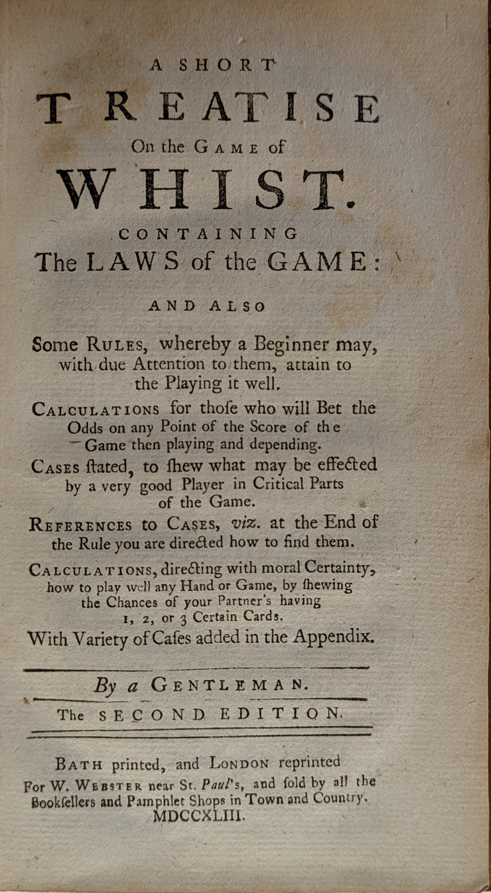

A Descriptive Bibliography of Edmond Hoyle
Copyright © 2014-26 by David Levy
(page updated 2026-01-30)User Guide
Whist.1.P.1.2
A Short Treatise on the Game of Whist, printed for W. Webster, first piracy of the first edition, second edition, 1743.
 |
Title: |
A SHORT | TREATISE | On the Game of | WHIST. | CONTAINING | The LAWS of the GAME: | AND ALSO | Some Rules, whereby a Beginner may, | with due Attention to them,
attain to | the Playing it well. | Calculations for thoſe who will Bet the | Odds on any Point of the
Score of the | Game then playing and depending. | Cases ſtated, to ſhew what may be effected | by a very good
Player in Critical Parts | of the Game. | References to Cases, viz. at the End of | the Rule you are directed how to find
them. | Calculations, directing with moral Certainty, | how to play well any
Hand or Game, by ſhewing | the Chances of your Partner’s having | 1, 2, or 3
Certain Cards. | With Variety of Caſes added in the Appendix. | [rule] | By a Gentleman. | [rule] | The SECOND EDITION | [double rule] | Bath printed, and London reprinted | For W. Webster near St. Paul's, and ſold by all the | Bookſellers and Pamphlet Shops in Town and
Country. | MDCCXLIII. |
| Collation: |
8o: [A]4 χ2 B–M4 [$½ (−L2) signed]; 50 leaves, pp. π[1–5] 6–8 [9–12], 1–86 [87–88] |
| Half Title: |
‘A SHORT | TREATISE | On the GAME of | WHIST.’ |
| Contents: |
Signature (Page) Reference |
Contents |
Signature (Page) Reference |
Running Titles |
| A1r (π1) |
half title |
|
|
| A1v (π2) |
blank |
|
|
| A2r (π3) |
title |
|
|
| A2v (π4) |
blank |
|
|
| A3r–A4v (π5–8) |
‘[headpiece] | Advertisement. | [letter from a Gentleman at Bath]’ |
|
|
| χ1r–χ2v (π9–12) |
‘[headpiece] | THE | CONTENTS. | [...]’ |
χ1v–χ2v (π10–12) |
‘The Contents.’ |
| B1r–M3v (1–86) |
‘[headpiece] | A SHORT | TREATISE | On the GAME of | WHIST. | [...]’ |
|
|
| M4r–M4v (87–88) |
blank |
|
|
| Catchwords: |
A3r(π5) 'vai, [vail]; H4v(56) CHAP- [CHAP.] |
| Press Figures: |
C4r(o):3; E2v(o):3 |
| Publisher: |
James Mechell, “W. Webster” |
| Printer: |
James Mechell (Cogan v Chapelle, ornaments) |
| Notices: |
1743-02-19 General Evening Post: "This day was published, price 2s. A Short Treatise on the Game of
Whist...N. B. This has been privately sold for one guinea. By a Gentlemen.
Bath printed, London reprinted, for W. Webster..." |
| Price: |
2s. (advertisement) |
| References: |
ESTC T175497, Jessel 775, Marshall s7 no.8 p4 (1889-07-06), Rather 3 |
| Copies Seen: |
L [1471.g.39] (ECCO) (Google) (state 2); O [Jessel e.639] (state 2); O [Jessel e.640] (lacking gathering A); Copisarow (state 3); ICN [GV1277.H89 1743] (state 4); TNJ [GV1277.H87 1743a c.1] (state 2); TNJ [GV1277.H87 1743c] (state 4); Levy [1681] (state 4); Levy [1767] (state 2) |
| Other Copies: |
Oa [WX.1.7[2]] (state 3); Sings (state 4); NcU [GV1277.H89] (state 3) |
| Notes: |
For a discussion of the printing variants and how they are classified, see Whist.1.P.1.1The state of the title page A2r is noted for each holding. Only the state 4 title
page,
illustrated and transcribed here is s stated second editions. |
Home